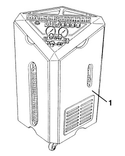
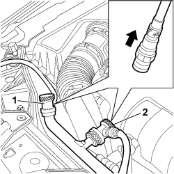

0010T84 COOLANT FOR AIR CONDITIONING SYSTEM - DEHYDRATE AND REPRESSURIZE
- Path
- Procedures > 00 MAINTENANCE > 0010 NEW VEHICLES AND MAINTENANCE > 0010T VEHICLE FLUIDS > 0010T84 COOLANT FOR AIR CONDITIONING SYSTEM - DEHYDRATE AND REPRESSURIZE
- Kind
- repair procedure (removal / refitting; the operation number is the code)
- Applies to
- engines: 2.2, 1.9 JTD 8v, 1.9 JTD 16v, 2.4 JTD 20v; all production periods
- Interactive page
- https://sloeber94.github.io/elrnDB-fCrm/en/#/194000221
Applies to: engines: 2.2, 1.9 JTD 8v, 1.9 JTD 16v, 2.4 JTD 20v; all production periods
Follow the safety instructions
Op. 5040 AIR CONDITIONING CASING AND COMPONENTS
1. Use the special draining and repressurizing equipment.

Applies to: engines: 2.2, 1.9 JTD 8v, 1.9 JTD 16v, 2.4 JTD 20v; all production periods
Let the engine run with the air conditioning on for 10 - 15 minutes then undo the repressurizing valve caps.
Before fitting the connectors on the needle valves, move the knurled ring nut upwards.
1. Connect the rapid connector valve, which is red, to the connector for the corresponding high pressure pipe (HIGH).
2. Connect the rapid connector valve, which is blue, to the connector for the corresponding low pressure pipe (LOW).

Applies to: engines: 2.2, 1.9 JTD 8v, 1.9 JTD 16v, 2.4 JTD 20v; all production periods
Start the procedure for draining the refrigerant fluid, following the instructions in the equipment manual.
1. Whilst draining the system the compressor fluid that comes out collects in a special container.

Applies to: engines: 2.2, 1.9 JTD 8v, 1.9 JTD 16v, 2.4 JTD 20v; all production periods
Component | Type | Description | Classification | Qty. | Validity |
|---|---|---|---|---|---|
Air conditioning circuit | Oil (cm³) | SP 10 | - | 120 ± 15 135 ± 15 | 2.2 petrol 1.9 jtd 2.4 jtd |
If some of the components are being replaced, the following amount of oil must be added for each of the replaced components (cm³):
- Pipes: 5 cm³
- Evaporator: 40 cm³
- Condenser with integrated filter: 50 cm³
Compressor: Pour the compressor fluid that should be replaced into a test tube.
Repeat the same operation on the new compressor introducing the oil into another test tube.
Introduce an amount of oil into the new compressor equivalent the amount removed from the old one.
Start the procedure for repressurizing the refrigerant fluid, following the instructions in the equipment manual.
Add the recommended quantity of refrigerant fluid.
Component | Type | Description | Classification | Qty. | Validity |
|---|---|---|---|---|---|
Air conditioning circuit | Refrigerant fluid [cm³] | R134a | - | 730 ± 40 |
In the case of damage to the compressor or other system components or following prolonged exposure of the pipes to the air (more than 6 hours) the WASHING procedure must be carried out as follows.
Clean the pipes connected to the compressor using a jet of air.
Connect the (drained) system to the repressurizing equipment.
Introduce the recommended quantity of refrigerant fluid at the high pressure side.
Collect the refrigerant fluid at the low pressure side.
Repeat the introduction and collection of fluid.
Proceed with draining and repressurizing the system as illustrated previously.
Refill the system with exactly the same amount of fluid indicated on the container.
Component | Type | Description | Classification | Qty. | Validity |
|---|---|---|---|---|---|
Air conditioning circuit | Oil (cm³) | SP 10 | - | 120 ± 15 135 ± 15 | 2.2 petrol 1.9 jtd 2.4 jtd |
Topics linked from this page (1)
Topics that link to this page (26)
- L010 CLIMATE CONTROL NOT COOLING
- L012 CLIMATE CONTROL DOES NOT COOL TO THE DESIRED TEMPERATURE
- L015 CLIMATE CONTROL NOT HEATING
- S050 CLIMATE CONTROL SYSTEM NOISY / (IN THE ENGINE COMPARTMENT)
- 5040AB REFRIGERANT CIRCUIT CHECK
- 1004B10 POWER UNIT WITH MANUAL GEARBOX - R.R
- 1004B14 POWER UNIT WITH AUTOMATIC TRANSMISSION R + R
- 1048B50 TURBOCHARGER INTERCOOLER - R + R
- 1088B20 ENGINE COOLING RADIATOR - R + R
- 1088E11 FANS WITH SINGLE ENGINE DUCT - R+R
- 2130A22 COOLING RADIATOR OF AUTOMATIC TRANSMISSION HYDRAULIC CIRCUIT - R + R - INCLUDING FLUID LEVEL TOP UP IF NECESSARY
- IAIR CONDITIONING CASING AND COMPONENTS - GENERAL REMARKS
- 5040A20 AIR CONDITIONING COMPRESSOR - R+R - INCLUDES FLUID LEVEL CHECK AND TOP UP IF NECESSARY
- 5040A26 AIR CONDITIONING COMPRESSOR SUPPORT - R.R.
- 5040A40 AIR CONDITIONING CONDENSER - R+R
- 5040A44 AIR CONDITIONING DRIER FILTER/ACCUMULATOR - R+R
- 5040A56 LINE FROM DEHYDRATING - R R
- 5040A57 EVAPORATOR INLET PIPE - R.R.
- 5040A74 TANDEM PIPE FOR DELIVERY AND RETURN TO AIR CONDITIONING COMPRESSOR - R.R.
- 5040A78 TANDEM SUPPLY AND RETURN PIPE TO THE EVAPORATOR - R.R.
- 5040A82 PIPE FROM COMPRESSOR TO CONDENSER AND EXPANSION VALVE FITTING R R
- 5040B14 AIR CONDITIONING SYSTEM MULTISTAGE PRESSURE SWITCH - R+R
- 5040B30 EXPANSION VALVE (TUBE ORIFICE) - R+R
- 5040C12 AIR CONDITIONING CASING - R.R. WITH DASHBOARD REMOVED
- 5040D80 AIR CONDITIONER SYSTEM WIRING BUNDLE - R R OR REPLACE
- 5530A10 ALTERNATOR - R+R